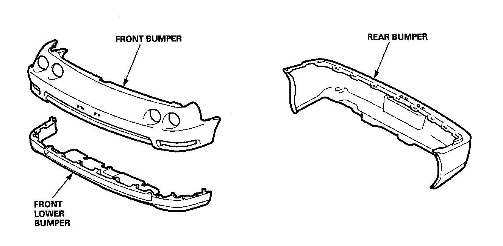

Polypropylene (PP) Resin Parts
General
Polypropylene resin bumper
The front bumper, rear bumper and front spoiler are made of polypropylene (PP) resin. They can be repaired if the damage or deformation is minor in nature. This section covers PP repair. Repairing PP is different from other resins such as ABS and urethane.